TypeScript
What is TypeScript?
- TypeScript is JavaScript for application-scale development
- TypeScript is JavaScript plus some additional features
Features of TypeScript
- TypeScript is just JavaScript
- TypeScript supports other JS libraries
- JavaScript is TypeScript
- TypeScript is portable
TypeScript and ECMAScript
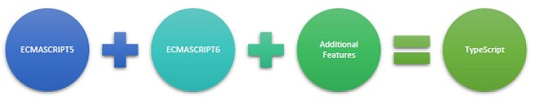Why Use TypeScript?
- Compilation
- Strong Static Typing
- Supports type definitions
- Supports Object Oriented Programming
Components of TypeScript
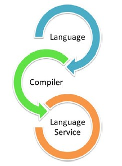- Language
- The TypeScript Compiler
- The TypeScript Language Service
How to use TypeScript
Commonly used types
Boolean
A simple true/false value
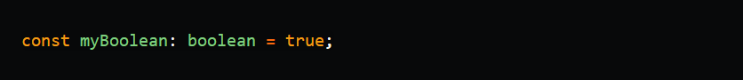Number
A number is a floating-point value. Hexadecimal, decimals, binary and octal literals are also supported
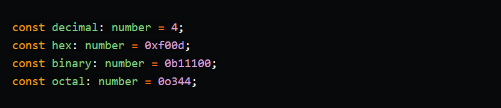String
A simple textual type
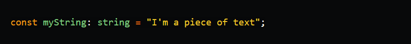Array
A simple array can be written a few different ways
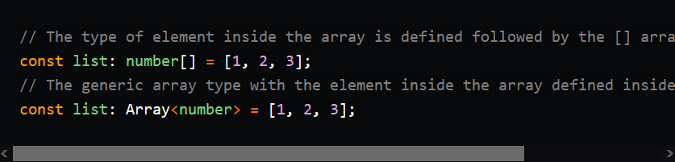Tuple
An array with a fixed number of elements where you know the types of the values, but an element in the array doesn’t have to be the same type
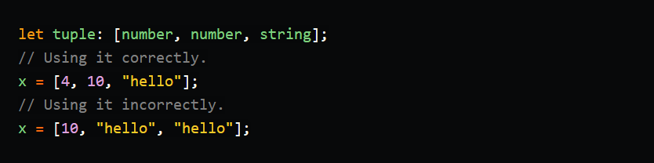Object
Object, as the name says, is the type for objects or technically speaking Non-Primitive data types. There are two ways of typing objects:
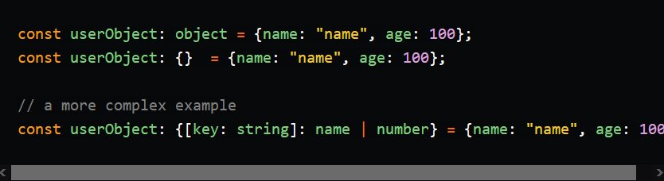Any
The types that will allow everything
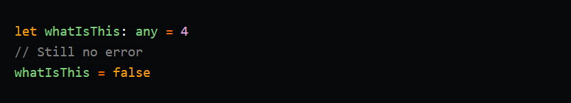Undefined and Null
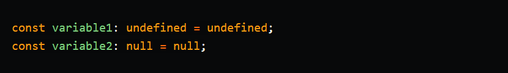Never
The never type is the type of value that never occurs
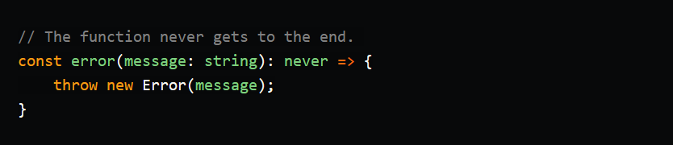Void
A Void type means that there is no type
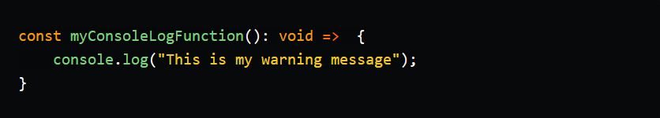Typing variables
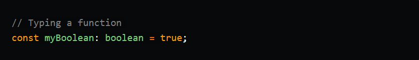 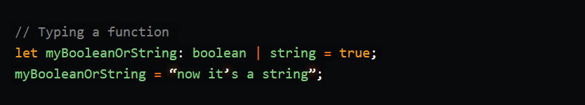Typing functions / return types for functions
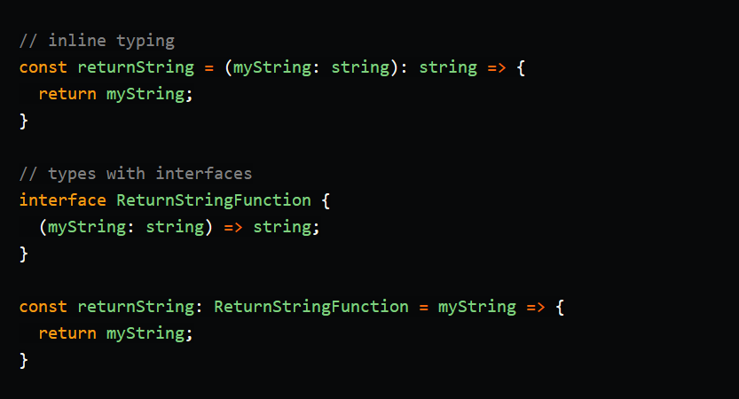Interfaces
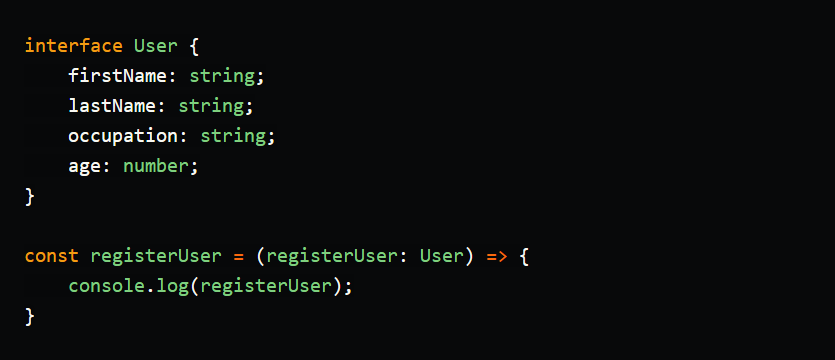extending interfaces
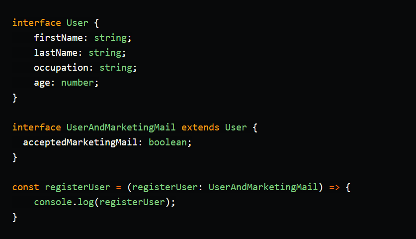Types
Types are similar to interfaces and can be used to type more complex data structures
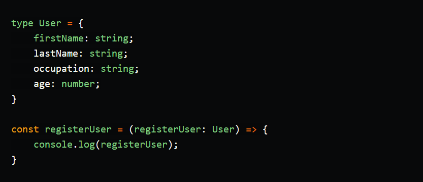extending type
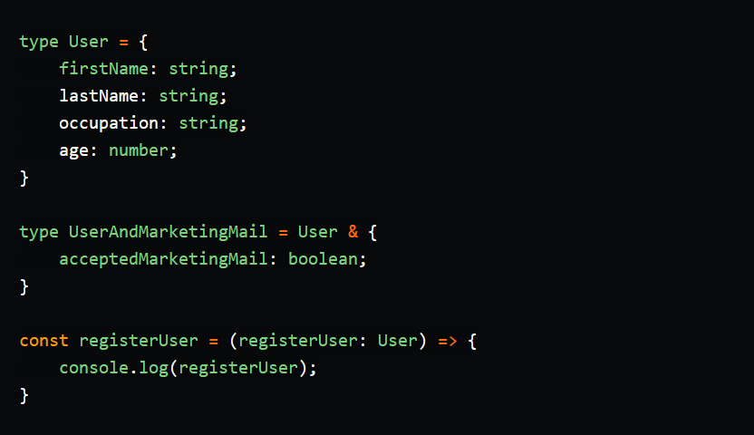Interfaces vs types
Type interfaces are similar but there are some differences:
- If you declare an interface with the same name twice Typescript will merge them into one
- Interfaces can only be used for object types but a type can be used for primitive data objects like strings, booleans, numbers, etc.
- Type aliases can use computed properties
Generics